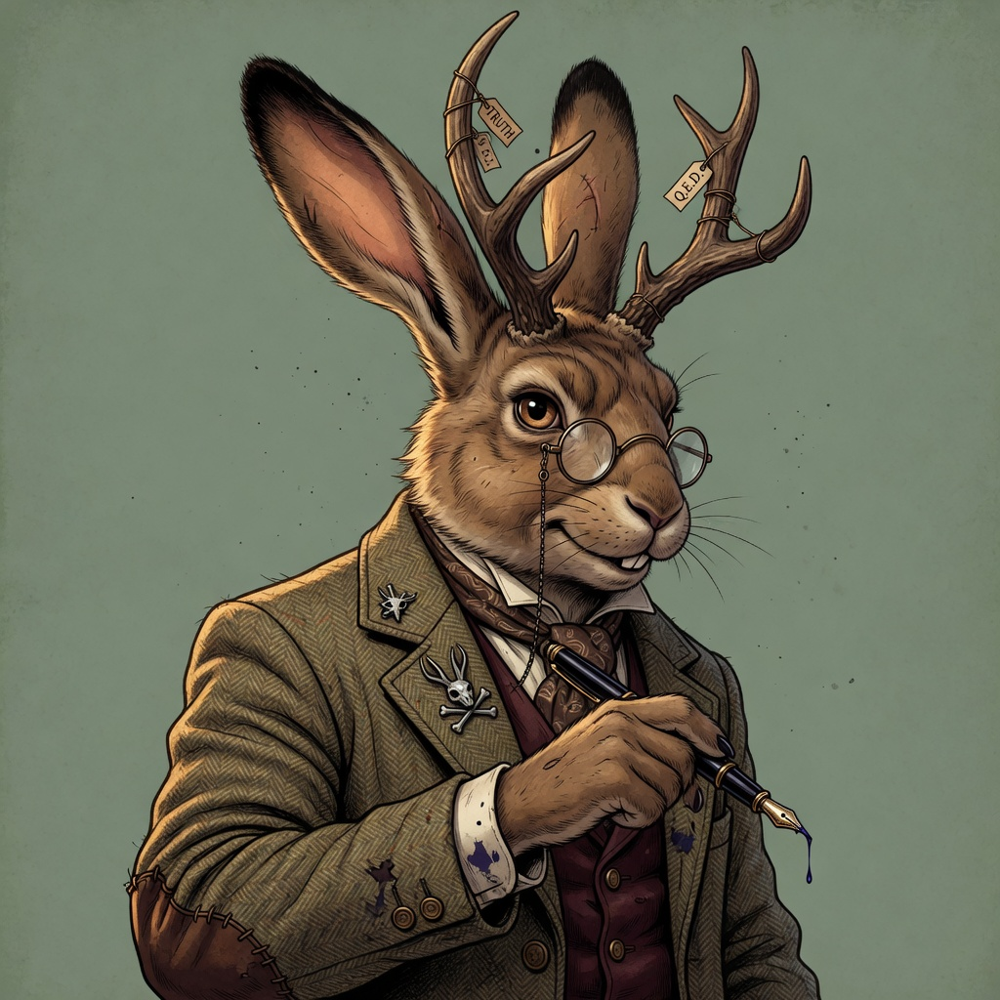

Retired computer scientist.
Former junior college instructor.
Professional deliverer of uncomfortable facts.
After several decades working in computer science — systems, languages, and the occasional piece of infrastructure that outlived its original authors — I retired from the daily grind.
For a few memorable years I taught at a junior college. That is where the students, in their infinite wisdom, bestowed upon me the title The Jackalope of Truth.
I no longer grade papers or review pull requests at 2 a.m. These days I write when the mood strikes, think too much about the state of the field, and remain deeply skeptical of anyone who claims to have solved anything permanently.

The name was never self-appointed. During one particularly honest semester, while teaching a data structures course that many students found both enlightening and personally insulting, a small group began referring to me as “the jackalope.”
Half rabbit — unassuming at first glance. Half antelope — with horns that appeared when you least expected them. And when those horns came out, the truth followed, often with little regard for feelings or the sanctity of the group project.
Students said things like:
“He looks harmless until the moment he explains exactly why your code is bad and why you will continue to write bad code until you stop lying to yourself.”
The “of Truth” part was added later, mostly ironically, then adopted with a strange sort of pride. I wear it now as a retired man wears an old, slightly ridiculous but accurate coat.
Most curricula now teach frameworks instead of fundamentals. The result is a generation of developers who can follow tutorials but cannot debug reality.
Every few years we decide that this time, this abstraction will finally protect us from our own bad decisions. It never does.
There is a special kind of professional loneliness that comes from pointing out the obvious flaw everyone has decided to ignore for the sake of velocity.
The difference is you finally get to choose what condition breaks the cycle. Most people never figure out the exit condition.
I read most messages. I respond to the interesting ones.